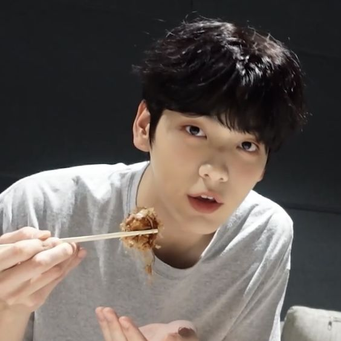
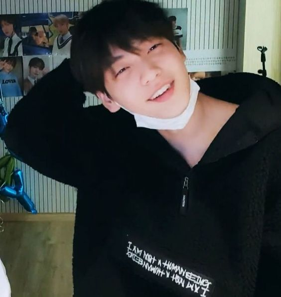
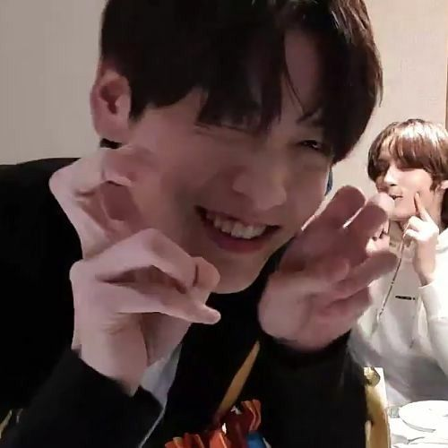
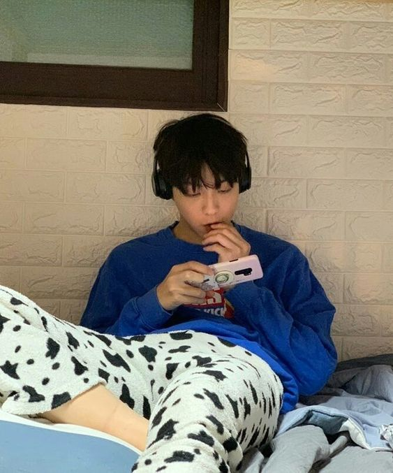

Soobin
♡
home = TXT




Quem é Soobin?
- Membro Oficial do Grupo Tomorrow By Together - TXT
- Nome artístico: Soobin (수빈)
- Nome de nascimento: Choi Soo Bin (최수빈)
- Idade: 21 anos
- Posição: Líder, Vocalista, Rapper, Dançarino
- Aniversário: 5 de dezembro de 2000
- Altura: 1.85 cm
- Signo do Zodíaco: Sagitário
- MBTI: ISFP-A
- Zodíaco Chinês: Dragão
- Emoji representativo: 🐰
- Tipo sanguíneo: A
- Nacionalidade: Coreano
Curiosidades sobre Soobin ♡
- Choi Soobin é de Sangnok-gu, Ansan, Gyeonggi-do, na Coreia do Sul.
- Soobin foi o segundo membro a ser anunciado no TXT.
- Adora ajudar na composição de músicas para outros grupos e cantores.
- Hobbies: Ouvir música, ler livros e brincar com seu animalzinho de estimação.♡
- Ele tem um ouriço chamado Odi, qual ele é muito apegado e se nomeia pai
- Soobin sempre corrige erros de ortografia de todos ao seu redor.
- Soobin já foi apresentador de um programa na TV coreano, e nesse período acabou
se desenvolvendo mais e acabou também se envolvendo mais com o mundo artístico.
- Soobin gosta de ambientes naturais, comer ao ar livre, aproveitar o vento e o sol em
seu rosto, uma boa companhia, baladinhas românticas e guitarra.